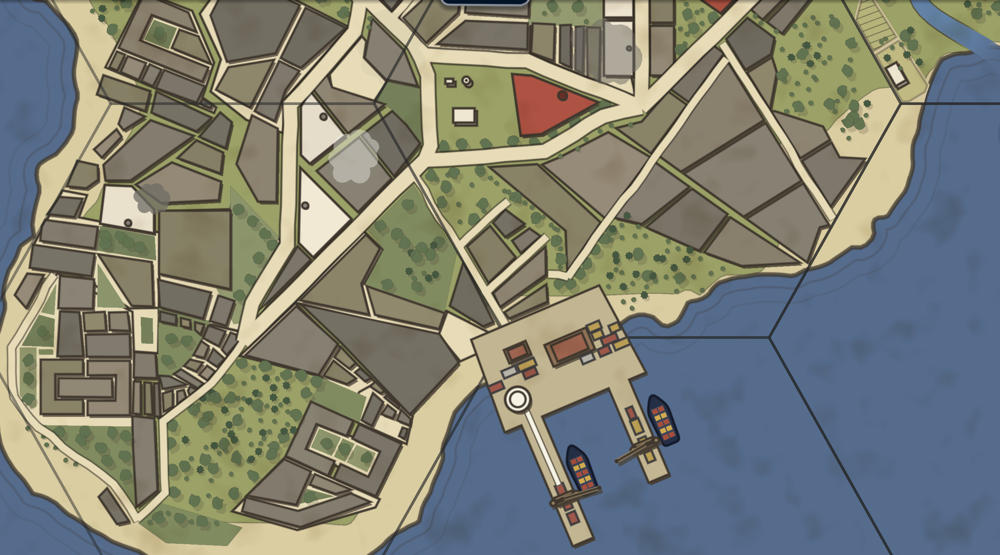
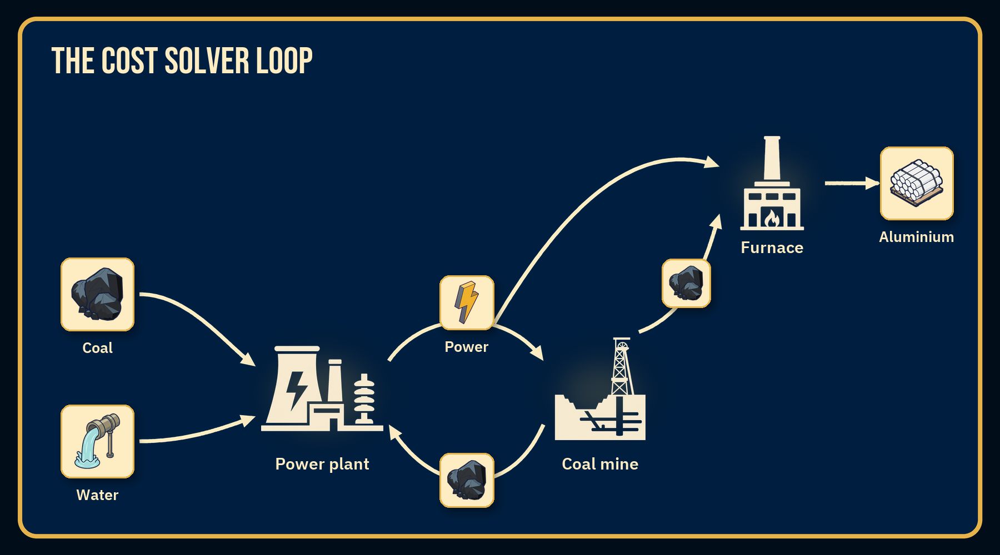

· Devlog 01
How I built an industrial tycoon and why roads kicked my ass
After nearly a year of solo development, Carbon and Capital now has its first public demo.
I can't believe I finally got here. It's been intense, but also really rewarding. Making this game was like playing whackamole. I was making changes to the tutorial and then realising I'd messed up a cost calculation and had to debug that before I could finish my original task. Sidequest on top of sidequest to get this game here. But I made it.
What is the game about?
It's about making things OR buying them. I wanted a game loop where you're not just trying to match production recipe ratios. Instead, for every recipe you can just lean on the global market either to buy some or all your inputs, and also to sell onto.
The game models production chains, transport, changing market prices and rivals. All of those systems have to agree about what something costs and tell you, the player, enough for their decisions to feel understandable.
Two of the hardest parts so far have been the road network and the cost solver. This devlog is about why they became difficult, what changed while building the demo, and what still needs work.
1. Roads
The roads you see on a tile aren't just visual. If a tile has roads, transports move faster over them.
The complexity here didn't come from the cost of roads or even from the throughput and the mechanics of road capacity, though that was challenging in its own right. No, the problem was making roads look nice. This game has a birdseye, topdown map. Nevermind that there's not a lot of games like that to even get inspiration from (i had to lean on historical maps like Sanborn Fire Insurance and Booth's Poverty Maps), but I also knew I didn't want to make it procedural. I tried procedural just in case (i'm often wrong so I thought why not try it) and it convinced me this was a job to be done by hand. So I drew the roads by trying to give JSON format coordinates to the game and then realised not only was this really difficult but also it was ugly and I made many mistakes. Roads in reality owe their shape to the locations they connect, the relief they avoid or take advantage of, as well as the preexisting buildings they have to avoid. This made it a catch-22. Without roads where do I place the buildings and without buildings where do I place the roads?
So the fix was to build a mini map editor for myself to place rivers then draft buildings visually, then roads (and then more final buildings and then trees and so on...). Then, many months after I had first started the project of making roads pretty I finally had my breakthrough and now roads look how I want them. Naturally, I still tweak the odd road because they had slightly wrong curvature or turn a bit sharply or some other reason to procrastinate from actually important feature work.

2. The cost solver
A game where you can buy from the market and the market prices move is hard. But a game where the power is made with coal and the coal mines require power to produce coal is really hard.

Back in university I'd done some statistics and graph theory and I pulled the concept of Directed Acyclical Graphs and Leontief Input-Output models out of my cobwebbed memory and started refreshing my understanding. This involved a lot of iterations and deciding how many loops I should let the game run within each turn (for example, each loop beyond the 2nd added increasing amounts of milliseconds to the turn change time no matter how well I optimised the code and at 20+ buildings this was becoming a problem). So I kept iterating with sparse matrices and other tools and eventually I had a system for calculating costs across 50+ goods (the demo now has 73) in iterative loops that ignore any recursive goods until all other goods have a formula related to the recursive goods and then resolves all of them at once. Once that was solved and for the first time in my life I documented how it worked as soon as I finished working on it, debugging any CostSolver issues became manageable. Not easy, but manageable.
But even though the solver can calculate that a factory is losing money, the player needs to know why. Is electricity expensive? Are inputs travelling too far? Has their own buying pushed up the market price? Are they producing more than the market can absorb?
Much of the work was not just calculating costs, but deciding which information to expose and when. I decided early that the most important number for a building is its cost of producing a unit of a given output. The 2nd most important is how cheap or expensive that number is relative to what you could've bought it for from the global market. Both numbers (or rather the number and the %) needed to be front and centre.
These are just some of the things Carbon and Capital has on offer. It's a game about managing a business as the politics, energy grid and markets around you keep changing. You have to adapt and make the world adapt to you in return.
Releasing the demo is the beginning of the public part of development, not the end of it. I already have a list of bug fixes, interface improvements and features I want to explore, but I also don’t want to keep designing the game in isolation.
If you play, I would particularly like to hear:
- Whether you specialised in something or went up and down the supply chain
- The first moment when the interface or economy stopped making sense
- If you liked something about the game
You can download the free demo here: carbonandcapital.itch.io/carbon-and-capital
Follow Carbon and Capital on itch.io if you want updates as the demo receives fixes and new features over the coming weeks. I’m also working towards a Steam page, and I’ll announce it here when it is ready (not for at least 2 months)
Thank you to the 40+ people who have already downloaded the demo and shared feedback. It has been enormously helpful at this stage.